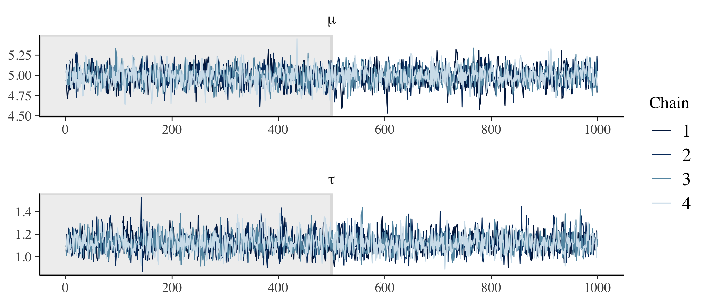
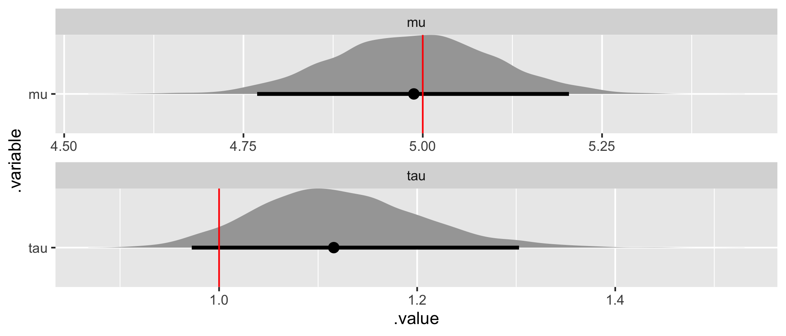
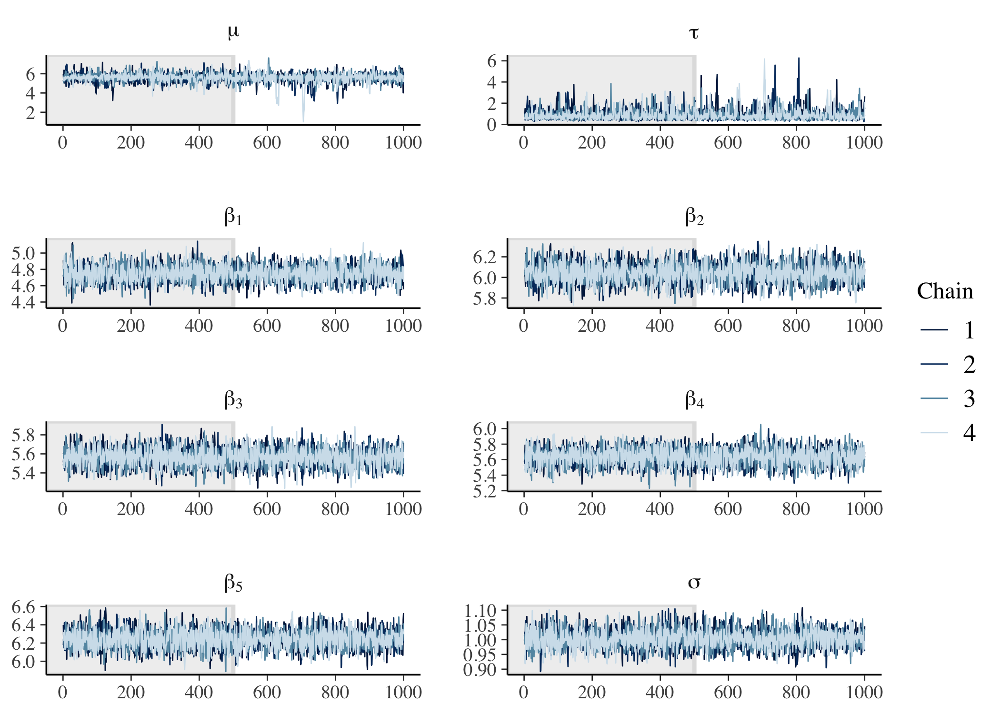
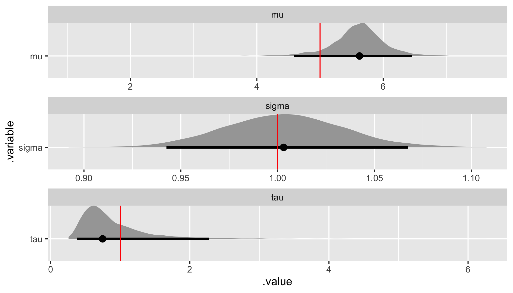
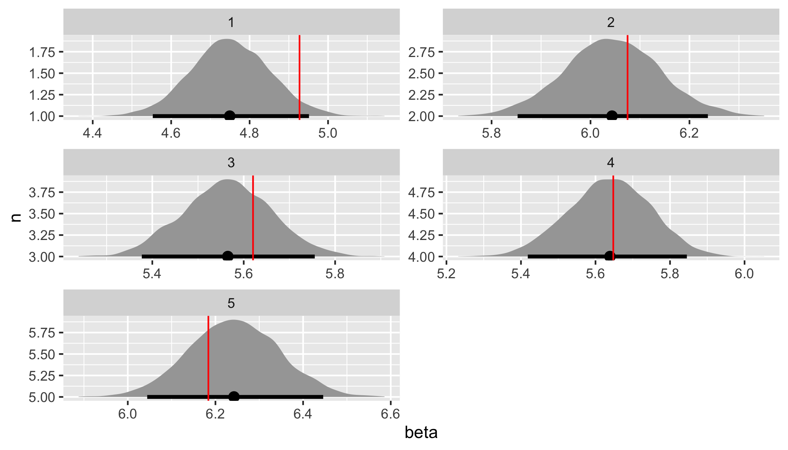
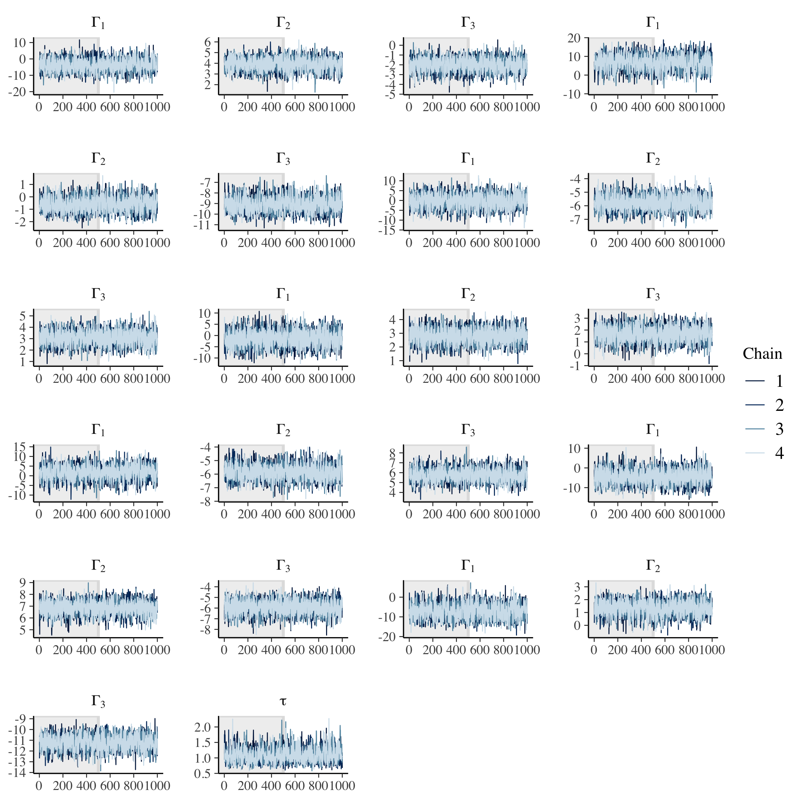
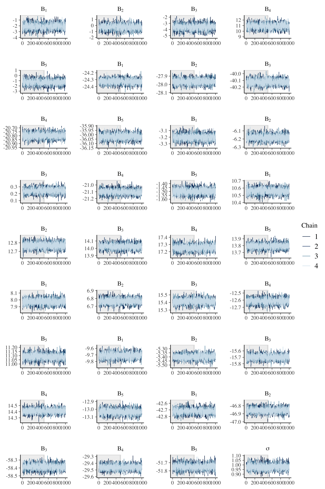
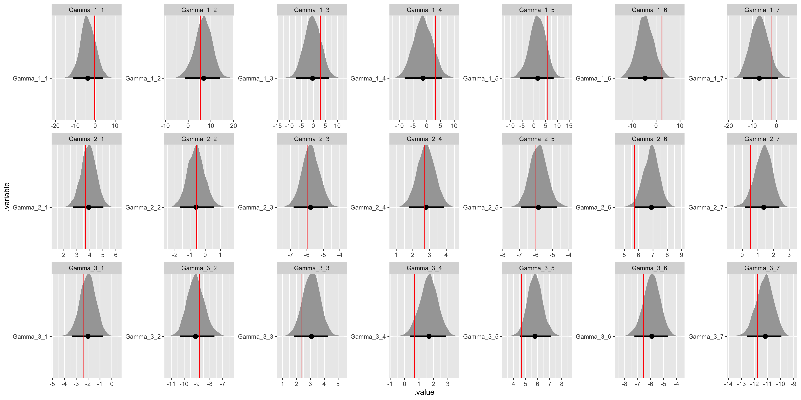
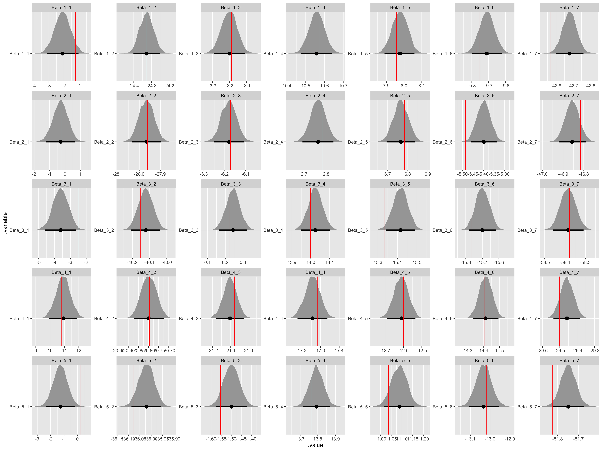
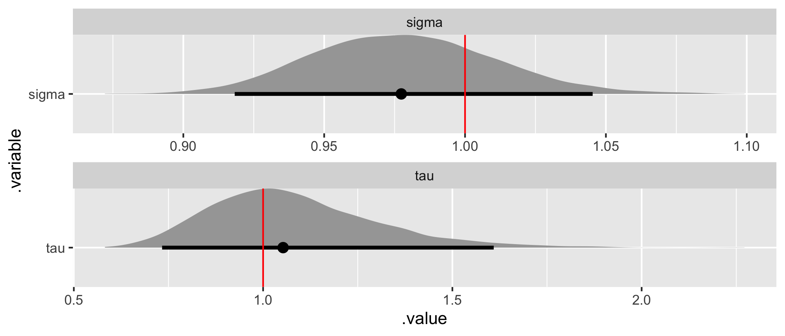

// Index value and observations.
data {
int<lower = 1> N; // Number of observations.
vector[N] y; // Vector of observations.
}
// Parameters.
parameters {
real mu; // Mean of the regression.
real<lower = 0> tau; // Variance of the regression.
}
// Regression.
model {
// Priors.
mu ~ normal(0, 5);
tau ~ normal(0, 5);
// Likelihood.
y ~ normal(mu, tau);
}Bayesian inference provides an intuitive and self-consistent approach to statistical modeling. In short, you have beliefs about unobserved values (e.g., the impact of price on customer satisfaction) and you use data to update those beliefs. The barrier to using Bayesian inference in practice has never been this intuition – it’s been the required computation. There has been a great deal of progress on this front, with Stan arguably providing the best modern solution.
Stan is a probabilistic programming language that provides a general-purpose sampler using Hamiltonian Monte Carlo. In other words, Stan automates the required computation (for many models), allowing you to conduct Bayesian inference by focusing solely on model building. This is especially powerful when it comes to utilizing the mainstay of Bayesian inference: hierarchical models.
The goal of this post is to provide a gentle introduction to building hierarchical models in Stan. We will be interfacing with Stan through R and will be adopting a tidy approach whenever appropriate. This post does not provide an introduction to Bayesian inference, including a complete Bayesian inference workflow, or the basics of using Stan. For that, I recommend Michael Betancourt’s case studies, Richard McElreath’s Statistical Rethinking, and the Stan User’s Guide. Much of what follows is motivated by Michael and Richard’s work as well as Ben Goodrich’s StanCon 2019 tutorial.
Simple flat regression
By way of introduction, let’s start with a simple flat or non-hierarchical regression. In a Stan script, which has native support in RStudio, we specify the three required blocks for a Stan model: data, parameters, and model (i.e., the prior and the likelihood or observation model).
We’ll save this Stan script as flat_regression.stan. Imagine this is a model of customer satisfaction where we have N individuals, a vector of satisfaction scores y with a single observation from each individual, and we are assuming that satisfaction y is distributed normal, with a single mean mu and variance tau to describe customer satisfaction in the population. Finally, our joint model is complete with normal priors on mu and tau, where tau is constrained to be positive in the parameters block.
Like all Bayesian models, this model is generative, so we can also use Stan to generate data according to some assumed parameter values and then use the generated data to test the model, including demonstrating parameter recovery. To do this, we reorganize these three blocks into data (which now includes the assumed parameter values as data) and generated quantities blocks (which now includes the observations that will be generated).
// Index and parameter values.
data {
int<lower = 1> N; // Number of observations.
real mu; // Mean of the regression.
real<lower = 0> tau; // Variance of the regression.
}
// Generate data according to the simple regression.
generated quantities {
// Vector of observations.
vector[N] y;
// Generate data.
for (n in 1:N) {
y[n] = normal_rng(mu, tau);
}
}We’ll save this Stan script as generate_flat_data.stan. The for loop over y in the generated quantities block emphasizes the strong assumption of this flat or non-hierarchical model that a single mean mu and variance tau describe customer satisfaction for the entire population. If this doesn’t sit well with you, a hierarchical model will provide the cure. We’ll get there shortly.
In an R script, let’s load the necessary packages, allow Stan to use as many cores as we have available, allow for Stan to save compiled code, specify assumed parameter values, and generate data according to our simple flat regression by calling generate_flat_data.stan.
# Load packages.
library(tidyverse)
library(rstan)
library(bayesplot)
library(tidybayes)
# Set Stan options.
options(mc.cores = parallel::detectCores())
rstan_options(auto_write = TRUE)
# Specify data and parameter values.
sim_values <- list(
N = 100, # Number of observations.
mu = 5, # Mean of the regression.
tau = 1 # Variance of the regression.
)
# Generate data.
sim_data <- stan(
file = here::here("Code", "generate_flat_data.stan"),
data = sim_values,
iter = 1,
chains = 1,
seed = 42,
algorithm = "Fixed_param"
)SAMPLING FOR MODEL 'generate_flat_data' NOW (CHAIN 1).
Chain 1: Iteration: 1 / 1 [100%] (Sampling)
Chain 1:
Chain 1: Elapsed Time: 0 seconds (Warm-up)
Chain 1: 0.000127 seconds (Sampling)
Chain 1: 0.000127 seconds (Total)
Chain 1: Stan provides verbose output noting progress as well as any warnings. Everything looks fine here, so we can go ahead and extract our simulated data.
# Extract simulated data.
sim_y <- extract(sim_data)$yTo test our model, we simply specify the simulated data as a list of data to be used as an input, call the regression model flat_regression.stan from R, and Stan does all the heavy lifting for us.
# Specify data.
data <- list(
N = length(sim_y), # Number of observations.
y = as.vector(sim_y) # Vector of observations.
)
# Calibrate the model.
fit <- stan(
file = here::here("Code", "flat_regression.stan"),
data = data,
seed = 42
)SAMPLING FOR MODEL 'flat_regression' NOW (CHAIN 4).
Chain 4: Gradient evaluation took 1.2e-05 seconds
Chain 4: 1000 transitions using 10 leapfrog steps per transition would take 0.12 seconds.
Chain 4: Adjust your expectations accordingly!
Chain 4:
Chain 4:
Chain 4: Iteration: 1 / 2000 [ 0%] (Warmup)
Chain 4: Iteration: 200 / 2000 [ 10%] (Warmup)
Chain 4: Iteration: 400 / 2000 [ 20%] (Warmup)
Chain 4: Iteration: 600 / 2000 [ 30%] (Warmup)
Chain 4: Iteration: 800 / 2000 [ 40%] (Warmup)
Chain 4: Iteration: 1000 / 2000 [ 50%] (Warmup)
Chain 4: Iteration: 1001 / 2000 [ 50%] (Sampling)
Chain 4: Iteration: 1200 / 2000 [ 60%] (Sampling)
Chain 4: Iteration: 1400 / 2000 [ 70%] (Sampling)
Chain 4: Iteration: 1600 / 2000 [ 80%] (Sampling)
Chain 4: Iteration: 1800 / 2000 [ 90%] (Sampling)
Chain 4: Iteration: 2000 / 2000 [100%] (Sampling)
Chain 4:
Chain 4: Elapsed Time: 0.031208 seconds (Warm-up)
Chain 4: 0.024732 seconds (Sampling)
Chain 4: 0.05594 seconds (Total)
Chain 4: Stan takes the three required blocks in flat_regression.stan and creates a Hamiltonian Monte Carlo sampler to produce draws from the posterior. The output tracks progress across many iterations (2000 by default) and chains (4 by default) along with any problems. Here we have printed the output for the fourth chain only and no problems have been identified. We can also check the trace plots.
# Check trace plots.
fit %>%
mcmc_trace(
pars = c("mu", "tau"),
n_warmup = 500,
facet_args = list(nrow = 2, labeller = label_parsed)
)
We have good mixing and clear convergence across all chains for both of our model parameters.
Finally, we can demonstrate parameter recovery by plotting the marginal posteriors for each of our parameters to confirm that the assumed parameter values used when generating data are within or near reasonable credible intervals.
# Recover parameter values.
par_values <- tibble(
.variable = c("mu", "tau"),
values = c(sim_values$mu, sim_values$tau),
)
fit %>%
gather_draws(mu, tau) %>%
ggplot(aes(x = .value, y = .variable)) +
geom_halfeyeh(.width = .95) +
geom_vline(aes(xintercept = values), par_values, color = "red") +
facet_wrap(
~ .variable,
nrow = 2,
scales = "free"
)
The assumed parameter values (in red) have been recovered by the model (they are in or nearly within a customary 95% credible interval)! In summary, we’ve specified a simple flat or non-hierarchical regression model in Stan, generated data according to that model, and used the generated data to demonstrate that the model is working as intended.
Simple hierarchical regression
So why use a hierarchical model (also known as a multilevel or nested multilevel model)? The most straightforward reason is that sinking feeling we have about the assumption that a single set of parameters will effectively describe the entire population. In terms of customer satisfaction, we know there is heterogeneity across consumers – not everyone behaves or thinks the same. At the very least, we can think about satisfaction being different for different customer groups or segments.
So what does a simple hierarchical regression look like in Stan?
// Index values and observations.
data {
int<lower = 1> N; // Number of observations.
int<lower = 1> K; // Number of groups.
vector[N] y; // Vector of observations.
int<lower = 1, upper = K> g[N]; // Vector of group assignments.
}
// Parameters and hyperparameters.
parameters {
real mu; // Mean of the population model.
real<lower = 0> tau; // Variance of the population model.
vector[K] beta; // Vector of group intercepts.
real<lower = 0> sigma; // Variance of the likelihood.
}
// Hierarchical regression.
model {
// Hyperpriors.
mu ~ normal(0, 5);
tau ~ normal(0, 5);
// Prior.
sigma ~ normal(0, 5);
// Population model and likelihood.
beta ~ normal(mu, tau);
for (n in 1:N) {
y[n] ~ normal(beta[g[n]], sigma);
}
}In the data block, we now have a vector g indicating which one of K groups each of our N individuals belong to. In the parameter block, we now have a K-dimensional vector of beta parameters, a separate mean for each of the K groups. In the model block we can see that the likelihood (now within a for loop) is still assumed normal, but now each individual’s observed overall satisfaction has a mean of beta specific to the group they belong to. We also have a population model beta ~ normal(mu, tau) that says these separate, group-level beta coefficients are themselves drawn from a population that is assumed normal with a mean mu and variance tau.
This is what is meant by a hierarchy: there are two levels to our model, the lower-level likelihood or observation model and the upper-level population model. Finally, our joint model is complete with a prior on the population model parameters (formally referred to as hyperpriors, since they are priors on a prior): normal hyperpriors on mu and tau (constrained to be positive). The likelihood variance, now called sigma, retains the same prior and positive constraint.
We can again translate this Stan script, hierarchical_regression_01.stan, into data and generated quantities blocks. Let’s call this script generate_hierarchical_data_01.stan and use Stan to generate data for us.
// Index and hyperparameter values.
data {
int<lower = 1> N; // Number of observations.
int<lower = 1> K; // Number of groups.
int<lower = 1, upper = K> g[N]; // Vector of group assignments.
real mu; // Mean of the population model.
real<lower = 0> tau; // Variance of the population model.
real<lower = 0> sigma; // Variance of the likelihood.
}
// Generate data according to the hierarchical regression.
generated quantities {
vector[N] y; // Vector of observations.
vector[K] beta; // Vector of group intercepts.
// Draw parameter values and generate data.
for (k in 1:K) {
beta[k] = normal_rng(mu, tau);
}
for (n in 1:N) {
y[n] = normal_rng(beta[g[n]], sigma);
}
}Note that the data block now includes the assumed parameter values for the hyperpriors as data with beta being drawn alongside y in the generated quantities block. Let’s call this Stan script from R to generate data according to a hierarchical model.
# Specify data and hyperparameter values.
sim_values <- list(
N = 500, # Number of observations.
K = 5, # Number of groups.
g = sample(5, 500, replace = TRUE), # Vector of group assignments.
mu = 5, # Mean of the population model.
tau = 1, # Variance of the population model.
sigma = 1 # Variance of the likelihood.
)
# Generate data.
sim_data <- stan(
file = here::here("Code", "generate_hierarchical_data_01.stan"),
data = sim_values,
iter = 1,
chains = 1,
seed = 42,
algorithm = "Fixed_param"
)
# Extract simulated data and group intercepts.
sim_y <- extract(sim_data)$y
sim_beta <- extract(sim_data)$betaWe can test our simple hierarchical model using our new simulated data to fit the hierarchical regression from R.
# Specify data.
data <- list(
N = length(sim_y), # Number of observations.
K = sim_values$K, # Number of groups.
y = as.vector(sim_y), # Vector of observations.
g = sim_values$g # Vector of group assignments.
)
# Calibrate the model.
fit <- stan(
file = here::here("Code", "hierarchical_regression_01.stan"),
data = data,
seed = 42
)Warning messages:
1: There were 6 divergent transitions after warmup. Increasing adapt_delta above 0.8 may help. See
http://mc-stan.org/misc/warnings.html#divergent-transitions-after-warmup
2: Examine the pairs() plot to diagnose sampling problemsOur sampler has identified a problem. We only have a simple hierarchical model and already our unique Hamiltonian Monte Carlo diagnostic, a divergent transition or divergence, has identified an issue. There is a good reason for these divergences. The short story is that hierarchical models have posteriors with geometry that is difficult to navigate. This is true independent of the sampler, but it’s quickly evident when using Hamiltonian Monte Carlo.
To address this issue, our first step (and one that is helpfully suggested in the warning message above) is to increase the adapt_delta, which functions like a step size as the sampler navigates the posterior. A larger adapt_delta equates to a smaller step size, meaning the sampler will be more careful as it navigates but it will also take longer. We find that adapt_delta = 0.99 (it only goes to 1) results in no divergences.
# Calibrate the model.
fit <- stan(
file = here::here("Code", "hierarchical_regression_01.stan"),
data = data,
control = list(adapt_delta = 0.99),
seed = 42
)We can now check trace plots, this time for both the population hyperparameters and the group parameters.
# Check trace plots.
fit %>%
mcmc_trace(
pars = c("mu", "tau", str_c("beta[", 1:data$K, "]"), "sigma"),
n_warmup = 500,
facet_args = list(nrow = 5, labeller = label_parsed)
)
Finally, we can demonstrate parameter recovery for both the population-level hyperparameters and the group-level parameters.
# Recover hyperparameter and parameter values.
hyper_par_values <- tibble(
.variable = c("mu", "tau", "sigma"),
values = c(sim_values$mu, sim_values$tau, sim_values$sigma),
)
beta_values <- tibble(
n = 1:data$K,
beta = as.vector(sim_beta)
)
fit %>%
gather_draws(mu, tau, sigma) %>%
ggplot(aes(x = .value, y = .variable)) +
geom_halfeyeh(.width = .95) +
geom_vline(aes(xintercept = values), hyper_par_values, color = "red") +
facet_wrap(
~ .variable,
nrow = 3,
scales = "free"
)
fit %>%
spread_draws(beta[n]) %>%
ggplot(aes(x = beta, y = n)) +
geom_halfeyeh(.width = .95) +
geom_vline(aes(xintercept = beta), beta_values, color = "red") +
facet_wrap(
~ n,
nrow = 3,
scales = "free"
)
Both the assumed hyperparameter and parameter values have been recovered by the model! To summarize, we have now specified a simple hierarchical regression model in Stan, generated data according to that model, and used the generated data to demonstrate that the model is working.
Multiple hierarchical regression
In this final section, let’s more fully embrace what it means to have a hierarchical model. With both a likelihood or observation model and a population model, we can include both observation-level and population-level covariates.
Exciting, right? Let’s get started.
// Index values, observations, and covariates.
data {
int<lower = 1> N; // Number of observations.
int<lower = 1> K; // Number of groups.
int<lower = 1> I; // Number of observation-level covariates.
int<lower = 1> J; // Number of population-level covariates.
vector[N] y; // Vector of observations.
int<lower = 1, upper = K> g[N]; // Vector of group assignments.
matrix[N, I] X; // Matrix of observation-level covariates.
matrix[K, J] Z; // Matrix of population-level covariates.
}
// Parameters and hyperparameters.
parameters {
matrix[J, I] Gamma; // Matrix of population-level coefficients.
real<lower = 0> tau; // Variance of the population model.
matrix[K, I] Beta; // Matrix of observation-level coefficients.
real<lower = 0> sigma; // Variance of the likelihood.
}
// Hierarchical regression.
model {
// Hyperpriors.
for (j in 1:J) {
Gamma[j,] ~ normal(0, 5);
}
tau ~ normal(0, 5);
// Prior.
sigma ~ normal(0, 5);
// Population model and likelihood.
for (k in 1:K) {
Beta[k,] ~ normal(Z[k,] * Gamma, tau);
}
for (n in 1:N) {
y[n] ~ normal(X[n,] * Beta[g[n],]', sigma);
}
}In the data block, we now have an index I specifying the number of observation-level covariates and an index J specifying the number of population-level covariates along with a corresponding N x I matrix X that contains the observation-level covariates (including an intercept) and a K x J matrix Z that contains the population-level covariates (again, including an intercept).
In the parameters block, Beta is now a K x I matrix of coefficients rather than a vector and Gamma, a J x I matrix of population-level coefficients, takes the place of mu. The model block also changes accordingly, with the population model in a for loop and including Z[k,] * Gamma in place of mu and the likelihood including X[n,] * Beta[g[n],]' in place of beta[g[n]]. Note, however, that we are still assuming that the population model is distributed normal with a common variance tau. We’ll come back to this at the end.
We can again translate this Stan script, hierarchical_regression_02.stan, into data and generated quantities blocks. Let’s call this script generate_hierarchical_data_02.stan and use Stan to generate data for us.
// Index values, covariates, and hyperparameter values.
data {
int<lower = 1> N; // Number of observations.
int<lower = 1> K; // Number of groups.
int<lower = 1> I; // Number of observation-level covariates.
int<lower = 1> J; // Number of population-level covariates.
int<lower = 1, upper = K> g[N]; // Vector of group assignments.
matrix[N, I] X; // Matrix of observation-level covariates.
matrix[K, J] Z; // Matrix of population-level covariates.
real<lower = 0> tau; // Variance of the population model.
real<lower = 0> sigma; // Variance of the likelihood.
}
// Generate data according to the hierarchical regression.
generated quantities {
vector[N] y; // Vector of observations.
matrix[J, I] Gamma; // Matrix of population-level coefficients.
matrix[K, I] Beta; // Matrix of group-level coefficients.
// Draw parameter values and generate data.
for (j in 1:J) {
for (i in 1:I) {
Gamma[j, i] = normal_rng(0, 5);
}
}
for (k in 1:K) {
for (i in 1:I) {
Beta[k, i] = normal_rng(Z[k,] * Gamma[,i], tau);
}
}
for (n in 1:N) {
y[n] = normal_rng(X[n,] * Beta[g[n],]', sigma);
}
}Note that the data block now includes the X and Z matrices, the observation-level and population-level covariates, respectively. We could also generate these matrices, each of which includes an intercept as the first column, in the generated quantities block instead of generating them in R. Also note that in the generated quantities block we have an additional for loop for simulating Beta and Gamma since we are working with matrices of coefficients instead of vectors. Let’s generate data by calling this Stan script from R.
# Specify data and hyperparameter values.
sim_values <- list(
N = 500, # Number of observations.
K = 5, # Number of groups.
I = 7, # Number of observation-level covariates.
J = 3, # Number of population-level covariates.
# Matrix of observation-level covariates.
X = cbind(
rep(1, 500),
matrix(runif(500 * (7 - 1), min = 1, max = 10), nrow = 500)
),
# Matrix of population-level covariates.
Z = cbind(
rep(1, 5),
matrix(runif(5 * (3 - 1), min = 2, max = 5), nrow = 5)
),
g = sample(5, 500, replace = TRUE), # Vector of group assignments.
tau = 1, # Variance of the population model.
sigma = 1 # Variance of the likelihood.
)
# Generate data.
sim_data <- stan(
file = here::here("Code", "generate_hierarchical_data_02.stan"),
data = sim_values,
iter = 1,
chains = 1,
seed = 42,
algorithm = "Fixed_param"
)
# Extract simulated data and group intercepts.
sim_y <- extract(sim_data)$y
sim_Gamma <- extract(sim_data)$Gamma
sim_Beta <- extract(sim_data)$BetaLet’s fit the model and recover parameters.
# Specify data.
data <- list(
N = sim_values$N, # Number of observations.
K = sim_values$K, # Number of groups.
I = sim_values$I, # Number of observation-level covariates.
J = sim_values$J, # Number of population-level covariates.
y = as.vector(sim_y), # Vector of observations.
g = sim_values$g, # Vector of group assignments.
X = sim_values$X, # Matrix of observation-level covariates.
Z = sim_values$Z # Matrix of population-level covariates.
)
# Calibrate the model.
fit <- stan(
file = here::here("Code", "hierarchical_regression_02.stan"),
data = data,
control = list(adapt_delta = 0.99),
seed = 42
)Note that even though we’ve preemptively set adapt_delta = 0.99 given the previous model’s performance, it will be easy to run into problems as we add more complexity to the posterior. We’ll touch on a common solution at the end. For now the model has finished calibration without any warnings.
Let’s evaluate trace plots.
# Check population model trace plots.
gamma_string <- str_c("Gamma[", 1:data$J, ",", 1, "]")
for (i in 2:data$I) {
gamma_temp <- str_c("Gamma[", 1:data$J, ",", i, "]")
gamma_string <- c(gamma_string, gamma_temp)
}
fit %>%
mcmc_trace(
pars = c(gamma_string, "tau"),
n_warmup = 500,
facet_args = list(
nrow = ceiling(length(c(gamma_string, "tau")) / 4),
ncol = 4,
labeller = label_parsed
)
)
# Check observation model trace plots.
beta_string <- str_c("Beta[", 1:data$K, ",", 1, "]")
for (i in 2:data$I) {
beta_temp <- str_c("Beta[", 1:data$K, ",", i, "]")
beta_string <- c(beta_string, beta_temp)
}
fit %>%
mcmc_trace(
pars = c(beta_string, "sigma"),
n_warmup = 500,
facet_args = list(
nrow = ceiling(length(c(beta_string, "sigma")) / 4),
ncol = 4,
labeller = label_parsed
)
)
Once again, we have good mixing and clear convergence across all chains, now to demonstrate parameter recovery for our many model parameters.
# Recover Gamma values.
gamma_values <- tibble(
j = sort(rep(1:(data$J), data$I)),
i = rep(1:(data$I), data$J),
.variable = str_c("Gamma", "_", j, "_", i),
values = as.vector(t(matrix(sim_Gamma, ncol = data$I)))
) %>%
select(.variable, values)
fit %>%
gather_draws(Gamma[j, i]) %>%
unite(.variable, .variable, j, i) %>%
ggplot(aes(x = .value, y = .variable)) +
geom_halfeyeh(.width = .95) +
geom_vline(aes(xintercept = values), gamma_values, color = "red") +
facet_wrap(
~ .variable,
nrow = data$J,
ncol = data$I,
scales = "free"
)
# Recover Beta values.
beta_values <- tibble(
n = sort(rep(1:(data$K), data$I)),
i = rep(1:(data$I), data$K),
.variable = str_c("Beta", "_", n, "_", i),
values = as.vector(t(matrix(sim_Beta, ncol = data$I)))
) %>%
select(.variable, values)
fit %>%
gather_draws(Beta[n, i]) %>%
unite(.variable, .variable, n, i) %>%
ggplot(aes(x = .value, y = .variable)) +
geom_halfeyeh(.width = .95) +
geom_vline(aes(xintercept = values), beta_values, color = "red") +
facet_wrap(
~ .variable,
nrow = data$K,
ncol = data$I,
scales = "free"
)
# Recover tau and sigma values.
hyper_par_values <- tibble(
.variable = c("tau", "sigma"),
values = c(sim_values$tau, sim_values$sigma),
)
fit %>%
gather_draws(tau, sigma) %>%
ggplot(aes(x = .value, y = .variable)) +
geom_halfeyeh(.width = .95) +
geom_vline(aes(xintercept = values), hyper_par_values, color = "red") +
facet_wrap(
~ .variable,
nrow = 2,
scales = "free"
)
All the assumed hyperparameter and parameter values have been recovered by the model! To summarize, we have now specified a multiple hierarchical regression model in Stan – with covariates at both the observation and population levels – generated data according to that model, and used the generated data to demonstrate that the model is working.
Final thoughts
While we haven’t touched on a complete Bayesian inference workflow, including evaluating prior and likelihood specifications using prior and posterior predictive checks, hopefully this provides a helpful starting point for using hierarchical models in Stan.
Note that we assumed throughout that the population model has a common variance. Relaxing this assumption requires that the population model be distributed multivariate normal with an accompanying covariance matrix, a far more flexible population model specification but one that adds enough complexity to the posterior geometry to require a non-centered parameterization. We’ll follow up on this topic in its own blog post.
Hierarchical models provide partial information pooling, a middle-ground between no information pooling (i.e., separate flat or non-hierarchical models for each group), which may not be possible, and complete information pooling (i.e., a single flat or non-hierarchical model), which provides limited inference. They also allow for covariates and parameter estimation at both the observation and population levels. To summarize, hierarchical models allow us to appropriately model heterogeneity – differences across groups. Given the prevalence of heterogeneity, hierarchical models should be our default approach in most applications and Stan removes the barriers to entry for the required Bayesian computation.
Marc Dotson
Marc is an assistant professor of marketing at the BYU Marriott School of Business. He graduated with an MSc from The London School of Economics and Political Science in 2009 and a PhD from The Ohio State University in 2016. His research interests include Bayesian inference, predictive modeling, consumer preference heterogeneity, and unstructured data. Marc teaches marketing analytics. You can find him on Twitter and GitHub.